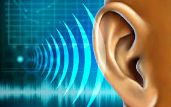
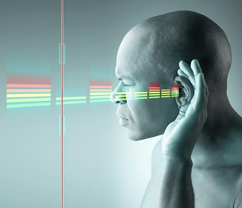
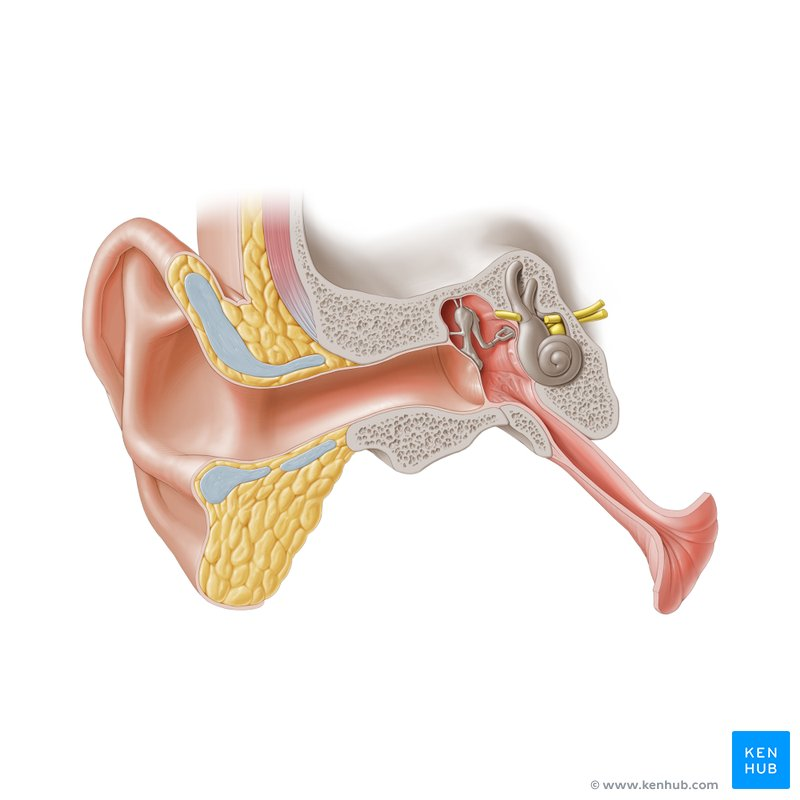
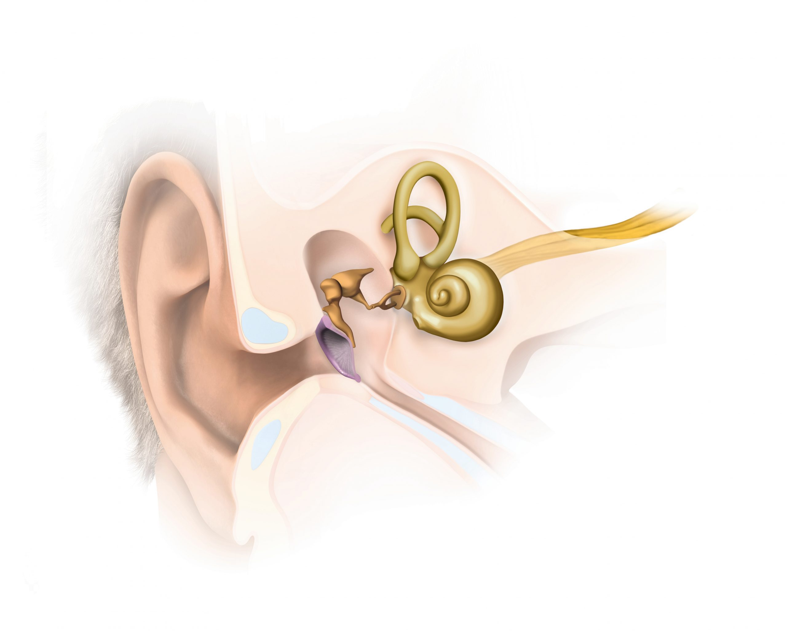
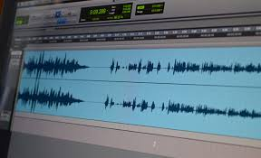
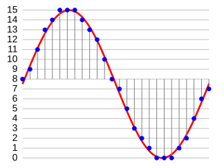
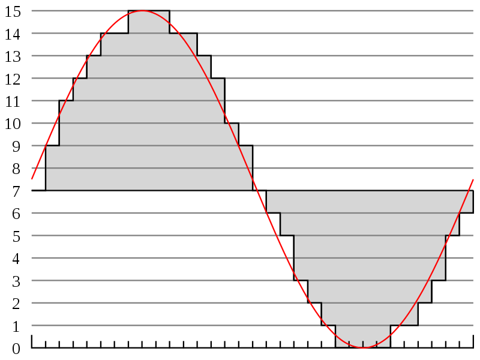
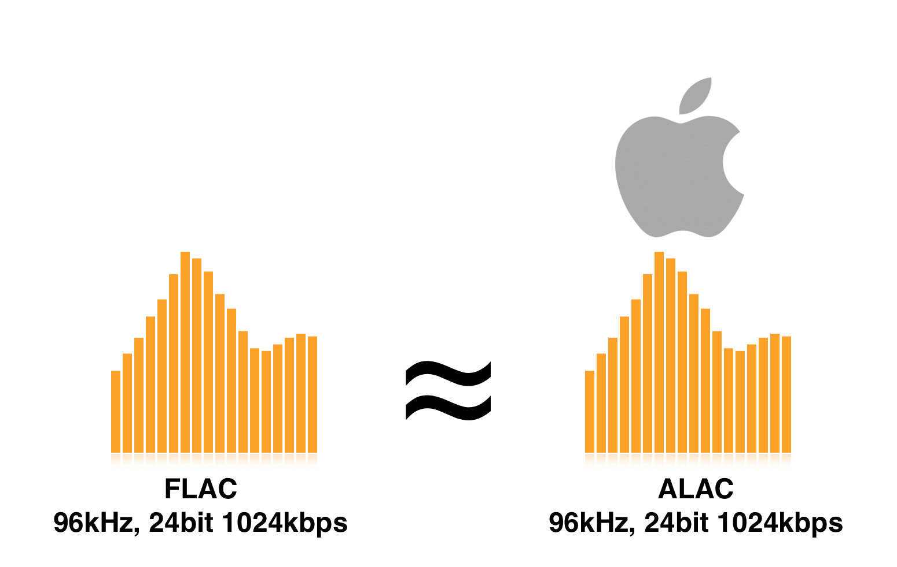
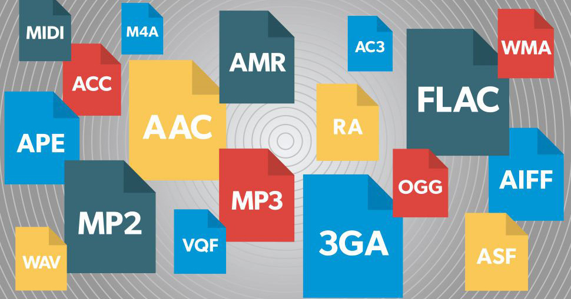

IV Compresion de Audio
4.1El sonido
En física, el sonido es una vibración que se propaga como una onda acústica, a través de un medio de transmisión como un gas, líquido o sólido.
En fisiología y psicología humanas, el sonido es la recepción de tales ondas y su percepción por parte del cerebro. Solo las ondas acústicas que tienen frecuencias que se encuentran entre aproximadamente 20 Hz y 20 kHz, el rango de frecuencia de audio, provocan una percepción auditiva en los humanos. En el aire a presión atmosférica, representan ondas sonoras con longitudes de onda de 17 metros a 1,7 centímetros. Las ondas de sonido por encima de 20 kHz se conocen como ultrasonido y no son audibles para los humanos. Las ondas sonoras por debajo de 20 Hz se conocen como infrasonido. Las diferentes especies de animales tienen diferentes rangos de audición
Caracteristicas del Sonido
El sonido se produce cuando un cuerpo vibra, y transmite dichas vibraciones al medio circundante en forma de ondas sonoras. Éstas se desplazan expansivamente, a una velocidad promedio (en aire) de 331,5 m/s, y pueden reverberar (“rebotar”) en distintos tipos de superficies, logrando distintos efectos de eco o de distorsión, que a menudo magnifican su potencia (como en las cajas de resonancia o los parlantes).
El sonido presenta las siguientes características físicas:
- • Frecuencia (f).
- • Amplitud.
- • Longitud de onda (λ).
- • Potencia acústica (W).
- • Espectro de frecuencia.
Es el número de vibraciones completas por segundo que efectúa la fuente del sonido y que se transmite en las ondas. Un sonido audible por los seres humanos tendrá una frecuencia de entre 20 y 20.000 Hz. Por encima de ese rango será un ultrasonido perceptible, a lo sumo, por algunos animales.
Es la intensidad (potencia acústica), que solemos llamar «volumen«. La amplitud se relaciona con la cantidad de energía transmitida por las ondas sonoras.
Es la distancia que recorre una onda en un período de oscilación, o dicho de otro modo, la distancia entre dos máximos consecutivos de la oscilación.
Es la cantidad de energía emitida por las ondas por unidad de tiempo. Se mide en vatios y depende directamente de la amplitud de onda.
Es la distribución de amplitudes, o energía acústica, para cada frecuencia de las diversas ondas que componen el sonido.

4.2 Acustica
¿Cuál es la definición de acústica?
Por definición, la acústica es una «rama de la física y la tecnología» que se ocupa de los fenómenos audibles que surgen de la propagación de ondas en el espacio. Inicialmente, la gama de la acústica se refería únicamente a las ondas que se propagaban en el aire. Actualmente, es mucho más amplio y abarca también fenómenos inaudibles como los infrarrojos o ultrasonidos o las vibraciones que afectan al cuerpo humano y a los edificios.

¿Qué hace la acústica hoy?
La acústica incluye mediciones en los lugares de trabajo y en el medio ambiente, creando mapas acústicos de ciudades, pero también el tema muy extenso de medir vibraciones. No solo los sonidos audibles pueden tener consecuencias desagradables para nuestra salud. La acústica también se ocupa del análisis de las vibraciones en el entorno. Esto se aplica principalmente a la protección de la salud de las personas que están expuestas a vibraciones en su entorno de trabajo, pero también a la protección de edificios y al confort acústico en las habitaciones. Las ondas que se propagan en los centros pueden ser agradables, como música, o desagradables para nosotros.
Tipos de ruido en acústica
Sonido: El primer tipo de ruido es el ruido acústico. Ese ruido es todo lo que oímos y lo que nos molesta. Estos son principalmente sonidos transportados por el aire, es decir, sonidos transmitidos a través del aire. Este tipo de ruido es el más dañino para nuestro sistema auditivo. Las mediciones de ruido acústico se pueden realizar utilizando un medidor de nivel de sonido con un micrófono.
Vibracion: El segundo tipo de ruido es el ruido de vibración. Las vibraciones pueden dañar la estructura de los edificios. En el caso de las vibraciones que afectan a los humanos, las sentimos de diferentes formas. Podemos oírlo pero también sentirlo al tocar una superficie determinada o al estar en una estructura que vibra. Los efectos de una exposición excesiva a este ruido son, entre otros, enfermedades por vibraciones y problemas con el sistema circulatorio o el sistema nervioso. Para medir el ruido de vibración, utilizamos medidores de ruido y transductores de vibración conectados a ellos.

4.3 El sistema auditivo humano
¿Qué es el sistema auditivo?
Nuestro sistema auditivo es el encargado de hacernos uno de los regalos más maravillosos de la experiencia humana: El regalo de oír. Gracias al sentido del oído, podemos comunicarnos con las personas a las que queremos, escuchar música, disfrutar del cine, el teatro o la radio y oír los sonidos de la naturaleza. Oír bien es importante incluso para mantener despierto y activo nuestro cerebro, lo que aumenta nuestra calidad de vida y nuestro bienestar.
PARTES DEL OÍDO
El oído es la puerta de entrada del habla y del resto de los sonidos a nuestro cerebro. Está dividido en tres partes: oído externo, oído medio y oído interno.
Oido Externo
El oído externo está formado por el pabellón auditivo, que funciona como una especie de embudo que recoge las ondas sonoras y las envía hacia el interior del oído, y el canal auditivo. El pabellón auditivo es de gran importancia, ya que se encarga de compensar la presión que existe en el exterior del oído con la presión que existe en el interior, que es mucho mayor puesto que el aire está comprimido. Después de entrar en el pabellón auditivo, las ondas se dirigen hacia el tímpano por el conducto auditivo.
Oido Medioo
El oído medio se encuentra entre el tímpano (una membrana que delimita el conducto auditivo del oído medio) y la ventana oval. Está compuesto por tres huesos (el martillo, el yunque y el estribo), que son los encargados de transmitir los movimientos del tímpano a la ventana oval, que es una membrana que recubre la entrada a la cóclea en el oído interno.
Oido Interno
Finalmente, en el oído interno, concretamente en la cóclea, tiene lugar la transformación de las ondas sonoras en impulsos eléctricos que se envían al cerebro. Esto se hace a través del nervio auditivo. En el oído interno se encuentran también las células ciliadas. Los daños en las células ciliadas, precisamente, son una de las causas más comunes de las pérdidas auditivas.
CÓMO FUNCIONA EL OÍDO
Nuestro sistema auditivo se encarga de transformar las ondas sonoras y de transmitirlas a nuestro cerebro para que este la dote de significado.
- La oreja.
- Los oídos.
- El cerebro.
Tiene forma de embudo para cumplir mejor con su misión, recoge las ondas sonoras y las envía hacia el tímpano.
Convierten las ondas sonoras en impulsos nerviosos que se envían al cerebro.
Convierte los sonidos en impulsos que podemos entender y discrimina los sonidos relevantes del ruido de fondo.

4.4 Audio digital
¿QUE ES?
El audio digital es la codificación digital de una señal eléctrica que da origen a una onda sonora. Estas ondas van a ser las que representen el sonido en un equipo. Consiste en una secuencia de valores enteros y se obtiene de dos procesos: el muestreo y la cuantificación digital de la señal eléctrica.
El muestreo consiste en establecer la amplitud de la señal eléctrica a intervalos regulares de tiempo. Para cubrir el espectro audible del ser humano (20 a 20 000 Hz) suele bastar con tasas de muestreo de algo más de 40 000 Hz, es decir el doble de lo necesario. Para reproducir un determinado intervalo de frecuencias se necesita una tasa de muestreo de poco más del doble. En los CD, que reproducen hasta 20 kHz, se emplea una tasa de muestreo de 44 kHz.
Por otro lado, el proceso de cuantificación digital es posterior a la etapa de muestreo. El objetivo de esto es cuantificar con bits estos valores, mediante la asignación de niveles numéricos. Para 1986 los científicos Brandenburg, Popp y Grill comenzaron a desarrollar el formato MP3. Años más tarde, en 1995, Brandenburg lo usó por primera vez en su propia computadora, y hoy en día es uno de los formatos más usados para la transferencia de música, muy empleado tanto en los reproductores como en los celulares.

4.5 Modulación de pulsos codificados (PCM)
Este tipo de modulación, sin duda la más utilizada de todas las modulaciones de pulsos es, básicamente, el método de conversión de señales analógicas a digitales, PCM siempre conlleva modulación previa de amplitud de pulsos. La modulación por codificación de impulsos es un método de modulación mediante el cual la onda analógica continua se transmite en un modo digital.
Ventajas de la modulación PCM
La modulación por codificación de pulsos está presente, bien sea en la forma tratada antes, o en alguna de sus variantes, en la mayoría de las aplicaciones para transmitir o procesar información analógica en forma digital. Sus ventajas se resumen en el hecho de emplear codificación de pulsos para la representación digital de señales analógicas, característica que lo distingue de todos los demás métodos de modulación analógica. Algunas de sus ventajas más importantes son:
- Robustez ante el ruido e interferencia en el canal de comunicaciones.
- Regeneración eficiente de la señal codificada a lo largo de la trayectoria de transmisión.
- Formato uniforme de transmisión para diferentes clases de señales en banda base, lo que permite integrarlas con otras formas de datos digitales en un canal común mediante el multiplexado en tiempo.
- Facilidad de encriptar la información para su transmisión segura.

El precio a pagar por las ventajas anteriores es el mayor costo y complejidad del sistema, así como el mayor ancho de banda necesario. Respecto a la complejidad, la tecnología actual de circuitos integrados en gran escala (VLSI) ha permitido la implementación de sistemas a, relativamente bajo costo y facilitado el crecimiento de este método o de sus variantes.
Desventajas de la modulación PCM
- Mayor costo del sistema.
- Mayor complejidad del sistema.
- Mayor ancho de banda necesario.
Respecto a la complejidad, la tecnología actual de circuitos integrados en gran escala (VLSI) ha permitido la implementación de sistemas a, relativamente bajo costo y facilitado el crecimiento de este método o de sus variantes.
4.6 Amplitud modulada(AM)
Concepto de modulación
La modulación consiste en la variación de algún parámetro de la señal que permita un aprovechamiento óptimo del canal de comunicación, reflejado en una mayor cantidad de información transmitida a menor presencia de ruido [1]. La modulación analógica puede aplicarse sobre los siguientes parámetros: la amplitud de la señal, en la cual la portadora varía de acuerdo con la información; y la modulación angular, donde la información varía según la frecuencia de la señal portadora. Para efectos de este artículo, se procederá a entender la modulación de amplitud.

Modulación de amplitud
En el proceso de modulación en amplitud participan dos señales: la de información 𝑚(𝑡), también denominada señal de banda base, término usado para asignar una banda de baja frecuencia que tendrá la información; y la portadora, la cual es de suma importancia dado que puede ser manipulada de acuerdo con los requerimientos de la aplicación. Además, la portadora es usada para evitar la pérdida de información que puede darse en el medio por el cual se transmite. Asimismo, por convención y practicidad se trabajará con una señal de tipo senoidal para generar la forma de onda de la señal portadora.
Etapas de un transmisor AM
- Oscilador
- Modulador
- Amplificador de potencia
- Antena
Esta etapa genera la señal portadora de alta frecuencia. Utiliza circuitos osciladores, como el oscilador Hartley o el oscilador Colpitts, para producir la frecuencia deseada.
Aquí, la señal de audio (información que se desea transmitir) se superpone a la señal portadora. Esto se logra mediante la modulación de la amplitud, donde la amplitud de la portadora varía en función de la señal de audio.
Esta etapa aumenta la potencia de la señal modulada, asegurando que pueda ser transmitida a distancias más largas. Suele utilizarse un amplificador de clase C debido a su eficiencia.
Finalmente, la señal amplificada se envía a través de una antena, que radia la señal al espacio. La elección del tipo de antena es crucial para optimizar la transmisión y el alcance.

4.7 Frecuencia modulada(FM)
El término radio FM se refiere a la radiodifusión que funciona a través de frecuencia modulada (FM). Ha sido concebida para ofrecer una mejor calidad de sonido y una menor interferencia que la radio AM. Inventada en 1933 por Edwin Armstrong, la radiodifusión en FM produce una mayor fidelidad (una reproducción más precisa de los sonidos originales) que otras técnicas de transmisión analógicas como la radiodifusión en AM. También es menos susceptible a la interferencia electromagnética con menos estática y otros sonidos no deseados. Por lo que actualmente se emplea en la transmisión de música y audio en general.
La banda de FM comercial utiliza las frecuencias de los 87,5 MHz a los 108 MHz, colocándose en la zona VHF del espectro. En esta retransmiten la mayoría de emisoras de radio en Europa, América y otras zonas del mundo.

Formatos de Audio
El formato de audio es un tipo de archivo para almacenar datos de audio digital en un sistema informático. El ancho de banda máximo del formato de audio es de 20 KHz, con una frecuencia de entre 40 y 50 KHz. Al adoptar Liner PCM (modulación de código de pulso), cada longitud de paso cuantificado del audio es la misma. El diseño de bits de los datos de audio se denomina formato de codificación de audio y se puede descomprimir o comprimir para reducir el tamaño del archivo; por lo tanto, los formatos de archivo de audio se pueden dividir en compresión con pérdida y compresión sin pérdida. Pero lo que usamos a menudo es la compresión con pérdida. Dado que hay pérdida de datos en el proceso de audio digital, no podemos llegar a los que realmente no tienen pérdidas. No todos los formatos de archivos de audio son iguales. La frecuencia de muestreo y la profundidad de bits determinan la resolución, el rango de frecuencia y el rango dinámico del audio. El estándar para audio con calidad de CD es una frecuencia de muestreo de 44,1 kHz y una profundidad de bits de 16 bits. Cualquier cosa por debajo de esto y su audio no se considera alta definición (HD) o alta resolución. Muchos formatos de archivo de audio utilizan configuraciones inferiores a las que se consideran HD.
De acuerdo con los tipos de compresión que aplican, los formatos de audio se pueden clasificar en tres:
- WAV
- AIFF
- DSD
- FLAC
- ALAC
- MP3
- eliminar todos los datos de sonido que existen más allá del rango auditivo de las personas normales.
- reducir la calidad de los sonidos que no son fáciles de escuchar y comprimir todos los demás datos de audio de la manera más eficiente posible.
- Casi todos los dispositivos digitales del mundo con reproducción de audio pueden leer y reproducir archivos MP3 , ya sea que se trate de PC, Mac, Android, iPhone, Smart TV o cualquier otra cosa. Por ello es uno de los tipos de formatos de audio comerciales más empleados.
- AAC
- OGG Vorbis
- se adhiere a los principios del software de código abierto.
- se desempeña significativamente mejor que la mayoría de los otros formatos de compresión con pérdida (lo que significa que produce un tamaño de archivo más pequeño para equivalentes calidad de audio).
Formatos de Audio sin compresion.
Esta clase de archivos mantiene el mismo tamaño y calidad que el archivo original. Algunos de los más usados son:
Uno de los tipos de formato de audio más comunes es WAV, que son las siglas de Waveform Audio File Format. El formato de audio WAV fue desarrollado por Microsoft e IBM en 1991.
Mucha gente asume que todos los archivos WAV son archivos de audio sin comprimir, pero eso no es exactamente cierto. WAV es en realidad un contenedor de Windows para diferentes formatos de audio. Esto significa que un archivo WAV podría contener audio comprimido, pero rara vez se usa para eso.
Waveform audio file o archivo de audio de forma de onda. Conserva todos los datos originales, por lo que ofrece la mejor calidad posible. La mayor parte de los archivos WAV contienen audio sin comprimir en formato de modulación de código de pulso (PCM).
AIFF es otro de los tipos de formato de audio (Audio Interchange File Format). Similar a cómo Microsoft e IBM desarrollaron WAV para Windows, AIFF es un formato que fue desarrollado por Apple para sistemas Mac en 1988.
También similar a los archivos WAV, los archivos AIFF pueden contener varios tipos de formatos de audio. Por ejemplo, hay una versión comprimida llamada AIFF-C y otra versión llamada Apple Loops que utilizan GarageBand y Logic Audio. Ambos usan la misma extensión AIFF.
Audio interchange file format o formato de archivo de audio intercambiable. Apple creó este formato para almacenar audio con su calidad original y sin pérdidas. Estos archivos también contienen audio sin comprimir en formato PCM.
DSD o Direct Stream Digital, ofrece un enfoque diferente al usual. Todo comenzó en 1990, cuando se creó este estándar como una forma de archivar antiguas grabaciones analógicas. La idea era crear un estándar sencillo y eficiente para almacenar los datos musicales digitales de la PCM. Y el objetivo también era convertir en archivos PCM con frecuencias de muestreo basadas en múltiplos de 44,1 kHz. de forma muy sencilla.
Direct stream digital o transmisión directa digital. Codifica el sonido mediante una modulación de densidad de pulsos.
Formatos de Audio comprimido sin perdidas.
Ocupan menos espacio que el formato original, pero mantienen la calidad del sonido. Algunos de los más comunes son:
Free Lossless Audio Codec. Se ha convertido rápidamente en uno de los formatos sin pérdida más populares disponibles desde su introducción en 2001.
Lo bueno es que FLAC puede comprimir un archivo fuente original hasta en un 60 por ciento sin perder un solo bit de datos. Lo que es aún mejor es que FLAC es uno de los tipos de formato de audio libres de código abierto, por lo que no impone restricciones de propiedad intelectual.
Este formato libre y de código abierto ofrece compresión sin pérdida de información. Emplea la predicción lineal para convertir las muestras en series de pequeños números no correlativos, los cuales se almacenan eficientemente usando la codificación Golomb-Rice. Para aprovechar los silencios, cuyos valores numéricos tienen una alta repetición, utiliza una codificación RLE (run-length encoding) para muestras idénticas.
Apple’s lossless audio codec o codec de audio sin pérdidas de Apple. Este códec de audio también ofrece una compresión sin pérdida de datos con una forma de compresión parecida a FLAC, pero desarrollada por Apple.
Apple lanzó el audio sin pérdidas para los oyentes de Apple Music a mediados de 2021, confiando en el formato ALAC para ofrecer un sonido de alta resolución. Desde entonces, todo el catálogo de Apple Music se ha codificado con ALAC en resoluciones que van desde los 16 bits/44,1kHz -también conocidos como calidad CD- hasta los 24 bits/192kHz. Al igual que Tidal y Amazon Music, ni siquiera es necesario pagar por un nivel superior para escuchar audio sin pérdidas en Apple Music.
ALAC es compatible con todos los dispositivos de Apple, incluidos el iPhone, el iPad, el Mac y el HomePod, y con los dispositivos Android que utilizan Apple Music o iTunes.

Formatos de Audio comprimido con perdidas.
Estos eliminan información considerada poco importante durante la transmisión, por lo que tienen un tamaño menor que el archivo original. Entre los más empleados están:
Sin duda, uno de los tipos de formato de audio más conocidos. MP3 son las siglas de MPEG-1 Audio Layer 3. Fue lanzado en 1993 y explotó en popularidad, convirtiéndose finalmente en un de los formatos de audio más popular del mundo para archivos de música. ¡Hay una razón por la que teníamos “reproductores MP3” pero no “reproductores OGG”!
El objetivo principal de MP3 es triple:
Es, con diferencia, el formato de audio con pérdida de datos más conocido. El compresor MP3 analiza la señal de entrada y elimina la que puede desecharse aplicando un modelo psicoacústico. Este está basado en la forma en la que el oído humano percibe el sonido y es luego percibido por el cerebro, aprovechando las imperfecciones.
Advanced Audio Coding. Fue desarrollado en 1997 como el sucesor de MP3, y si bien se popularizó como formato de uso, nunca superó al MP3 como el más popular.
El algoritmo de compresión utilizado por AAC es mucho más avanzado y técnico que MP3, por lo que cuando compara la misma grabación en formatos MP3 y AAC con las mismas velocidades de bits, el AAC generalmente tendrá una mejor calidad de sonido.
Aunque MP3 es más un formato doméstico, AAC todavía se usa ampliamente en la actualidad. De hecho, es el método de compresión de audio estándar utilizado por YouTube, Android, iOS, iTunes, portátiles posteriores de Nintendo y PlayStations posteriores.
Este formato se conoce como OGG. OGG no representa nada. En realidad, ni siquiera es un formato de compresión. OGG es un contenedor multimedia que puede contener todo tipo de formatos de compresión, pero se usa más comúnmente para almacenar archivos Vorbis, de ahí que estos archivos de audio se llamen archivos Ogg Vorbis.
Vorbis se lanzó por primera vez en 2000 y su popularidad creció debido a dos razones:
MP3 y AAC tienen una base tan sólida que OGG ha tenido dificultades para convertirse en el centro de atención ( no muchos dispositivos lo admiten de forma nativa), pero está mejorando con el tiempo. Por ahora, lo utilizan principalmente los defensores incondicionales del software de código abierto.

VENTAJAS.
- Compresión de datos. Muchos formatos (como MP3, AAC o OGG) permiten reducir significativamente el tamaño del archivo, lo que ahorra espacio en disco y facilita el envío o transmisión por internet.
- Variedad de opciones. Existen formatos optimizados para diferentes usos: alta fidelidad (FLAC), compatibilidad (MP3), edición (WAV), etc., lo que permite elegir el más adecuado para cada necesidad.
- Alta calidad de audio disponible. Algunos formatos sin pérdida (FLAC, ALAC) y de alta tasa de bits (AAC, MP3 320 kbps) ofrecen una calidad de audio muy cercana o igual al original.
- Amplia compatibilidad. Formatos populares como MP3 y AAC son compatibles con casi todos los dispositivos, plataformas y sistemas operativos.
- Soporte para metadatos. La mayoría de los formatos permiten incrustar información como título, artista, carátula, etc., lo que mejora la organización y experiencia del usuario.
DESVENTAJAS.
- Pérdida de calidad. Los formatos con compresión con pérdida (como MP3 o AAC) eliminan parte de la información sonora, lo que puede afectar la fidelidad del audio.
- Tamaños grandes en formatos sin pérdida. Archivos como WAV o FLAC pueden ocupar mucho espacio, lo cual no es ideal para dispositivos con almacenamiento limitado.
- Problemas de compatibilidad. Algunos formatos como FLAC, OGG o ALAC no son soportados por todos los dispositivos, especialmente los más antiguos o sistemas cerrados.
- Dependencia de códecs. Algunos formatos requieren códecs específicos para ser reproducidos o editados, lo que puede complicar su uso en ciertos entornos.
- Complejidad para usuarios no técnicos. La variedad de formatos puede confundir a usuarios que no saben cuál es el mejor para su propósito (streaming, edición, archivo, etc.).